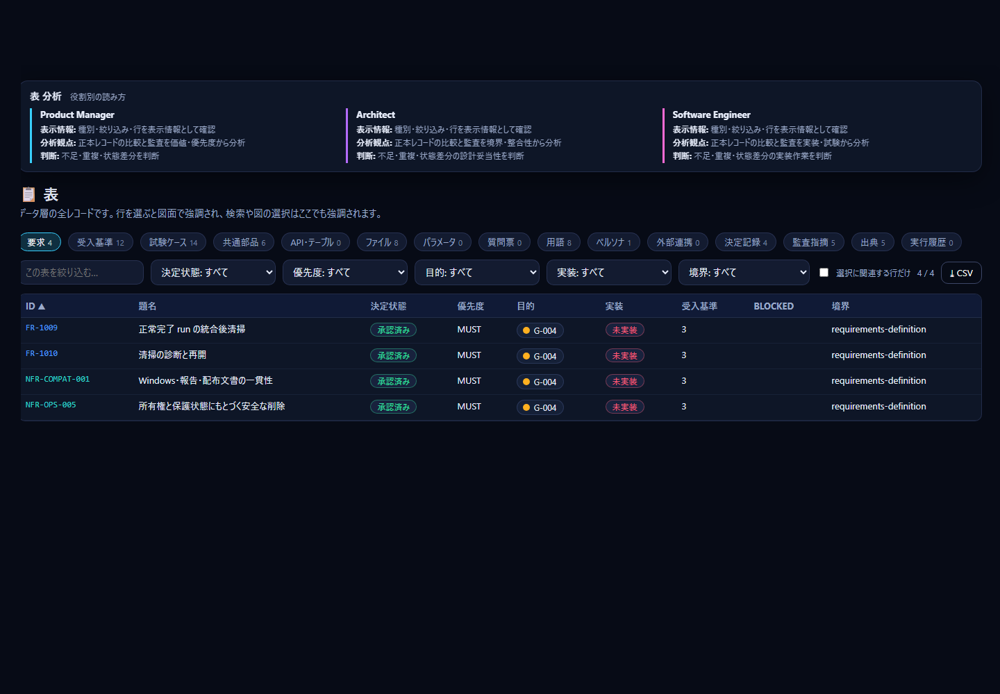
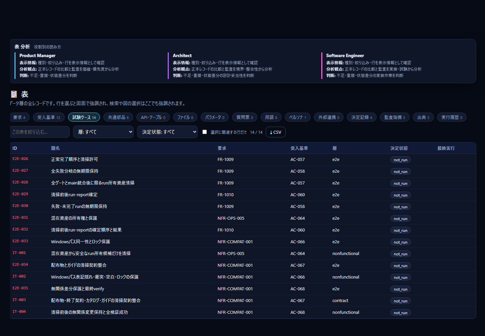
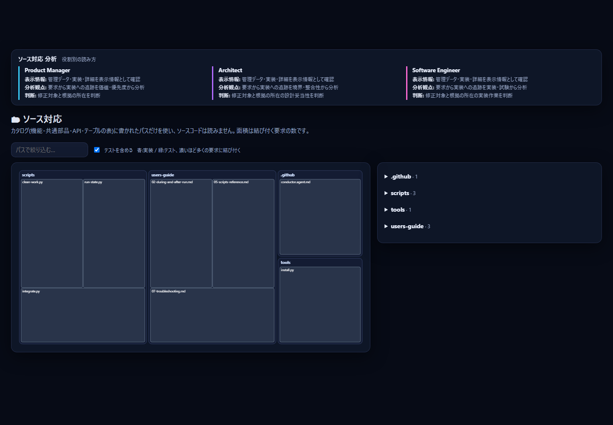
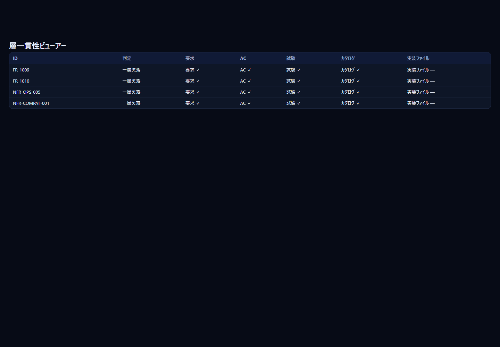

S7 Software Engineer 向けガイド
「この要求を満たす実装・テストはどこか」「次に直すのはどのファイルか」を、要求からファイルまでたどって決めるための手順です。所要時間は約 15 分です。
画面右上の 💻 Software Engineer を押すと、表の画面が開きます。--role swe で起動しても、最初にこの画面が開きます。
S7.1 見る画面と、読んでいるデータ
| 画面 | Software Engineer が見ること | 読むデータ（詳細は 08） |
|---|---|---|
| 表 → 要求・受入基準 | 要求の本文・受入基準・検証レベル・BLOCKED・実装の有無 | 要求定義書、カタログ |
| 表 → 試験ケース | ケースの層・状態・最終実行・実行コマンド | 台帳 |
| 表 → ファイル | 実装・テストのパスと、結び付く要求の数 | カタログ、台帳の command |
| ソース対応 | ファイルごとの、要求・共通部品・テストの対応 | カタログのパス |
| 詳細パネル | 要求 → 実装ファイル・テスト・部品・API・テーブル | カタログ |
| 一貫性 | 要求 → AC → 試験 → カタログ → 実装の欠け | 要求・台帳・カタログ |
S7.2 15 分のチュートリアル
- 起動します（1 分）。
powershell python EABK-Studio/studio.py --role swe - 作業する要求を選びます（2 分）。
表→要求を開きます。status: すべての絞り込みでapproved（承認済み）を、implの絞り込みでnone（実装ファイルが空）かunlisted（カタログに行がない）を選びます。優先度はMUSTから見ます。

3. 要求の中身を読みます（2 分）。行をクリックします。右の詳細パネルに、本文・受入基準（検証レベル system / integration / unit / manual）・BLOCKED が出ます。BLOCKED が付いた受入基準は、質問が未回答のため進められません。 4. 受入基準だけを並べます（1 分）。表 → 受入基準 で、検証レベルの絞り込みを使います。自分が書く単体・結合テストの対象（unit / integration）と、System Test の対象（system）を分けて見られます。
5. 既存のテストとコマンドを確認します（2 分）。表 → 試験ケース を開きます。層（layer）・状態（status）・最終実行が並びます。

行を選ぶと、詳細パネルに実行コマンド（command）・最後の commit・evidence が出ます。ここに書かれたコマンドで、そのケースを手元で実行できます。System Test の台帳は、python scripts/ledger.py でだけ更新します（直接編集しない）。
6. 実装のある場所へ移ります（2 分）。要求の詳細パネルの「実装ファイル」「テスト」「共通部品・API・テーブル」のチップから、関係するファイルへ移れます。↗ VS Code のリンクを押すと、VS Code でファイルや定義の行が開きます（vscode://file/… を使うので、VS Code が入っている PC で動きます）。
7. ファイルから要求へ逆引きします（2 分）。ソース対応 を開き、パスの絞り込みにファイル名を入れます。面積が大きいファイルは、多くの要求に結び付いています。変更するときの影響の大きさの目安になります。

8. 欠けた層を探します（2 分）。#/consistency を開きます。判定が「一層欠落」の要求は、要求・AC・試験・カタログ・実装ファイルのどれかが欠けています。欠けている層が、あなたの作業の入口です。

9. データを持ち出します（1 分）。表 の CSV で、表示中のタブの全行を書き出せます（UTF-8 で Excel でも開けます）。
S7.3 おすすめのリンク
| 目的 | リンク |
|---|---|
| 要求の一覧 | #/tables?tab=reqs |
| 受入基準の一覧 | #/tables?tab=acs |
| 試験ケースと実行コマンド | #/tables?tab=cases |
| 実装・テストのファイル | #/tables?tab=files |
| 共通部品・API・テーブル | #/tables?tab=parts、#/tables?tab=apis |
| パラメータ（閾値・期間） | #/tables?tab=params |
| 用語（使ってはいけない言い方） | #/tables?tab=terms |
| ファイル → 要求の対応 | #/source |
| 特定の要求 | #/map2d?q=<要求ID> |
| 欠けた層 | #/consistency |
S7.4 Software Engineer が判断できること
| 判断 | 根拠にする画面 | 次の行動 |
|---|---|---|
| 次に実装する要求 | 表 → 要求（approved・MUST・impl が none/unlisted）、BLOCKED の有無 |
/build の依頼の scope に要求 ID を指定する |
| 変更するファイル | 詳細パネルの実装ファイル・共通部品、ソース対応の面積 | 影響する要求の試験を実行する |
| 実行するテスト | 表 → 試験ケース の command・層・状態 |
python scripts/ledger.py で実行・記録する |
| 実装済みと言えるか | 一貫性（5 つの層）と、試験の status |
欠けた層を補う |
| 値の根拠 | 表 → パラメータ、AC 本文の {PARAM-nnn} |
値を変えるときは PARAM の決定を更新するよう依頼する |
| 使う言葉 | 表 → 用語（使ってはいけない言い方） |
識別子・メッセージの命名に反映する |
S7.5 読むときの注意
- 「実装あり」は、カタログにパスが書かれているかどうかです。ファイルの実在・内容は読みません。ずれが疑われるときは、
python scripts/verify.pyを実行してください。 - 試験ケースの
statusは、台帳に最後に記録された結果です。Studio はテストを実行しません。 - Studio は読み取り専用です（整合性保守の、カタログの題名・決定状態だけを除く）。実装も要求も、
/buildで依頼します。 - コードの中身・テストの結果の詳細（ログ）は表示しません。証跡の場所は、
試験ケースの evidence の欄にあります。
06-architect.md で設計の見方を、08-data-reference.md で各画面の根拠を確認できます。